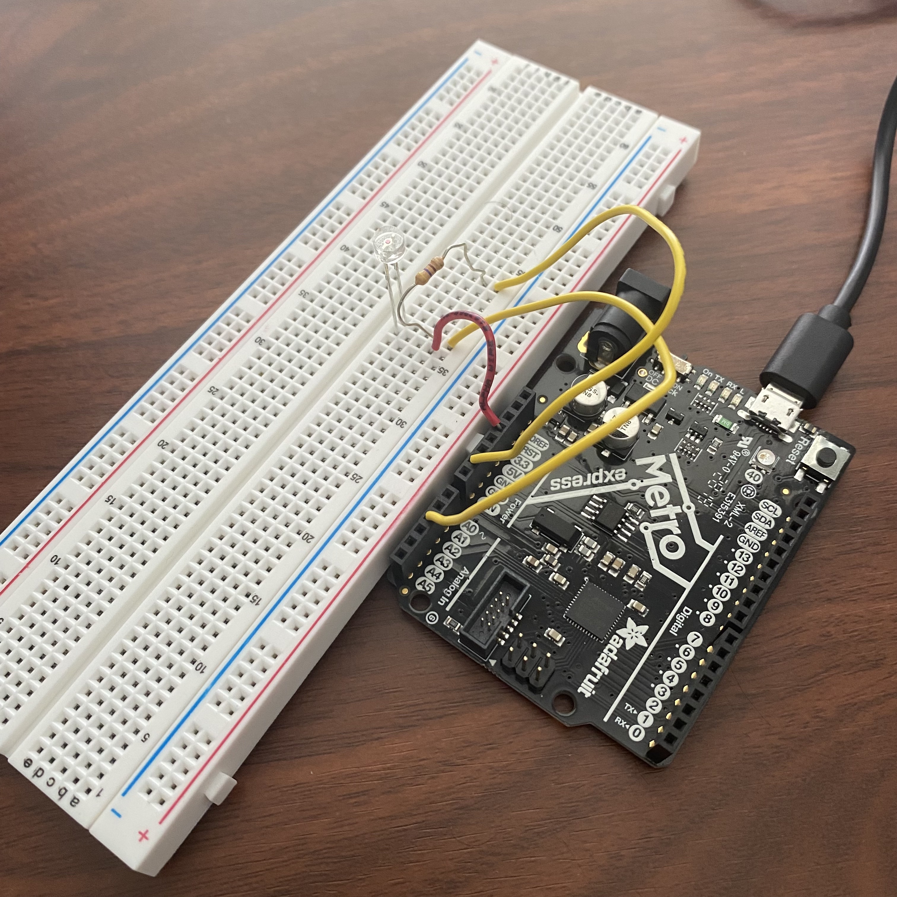
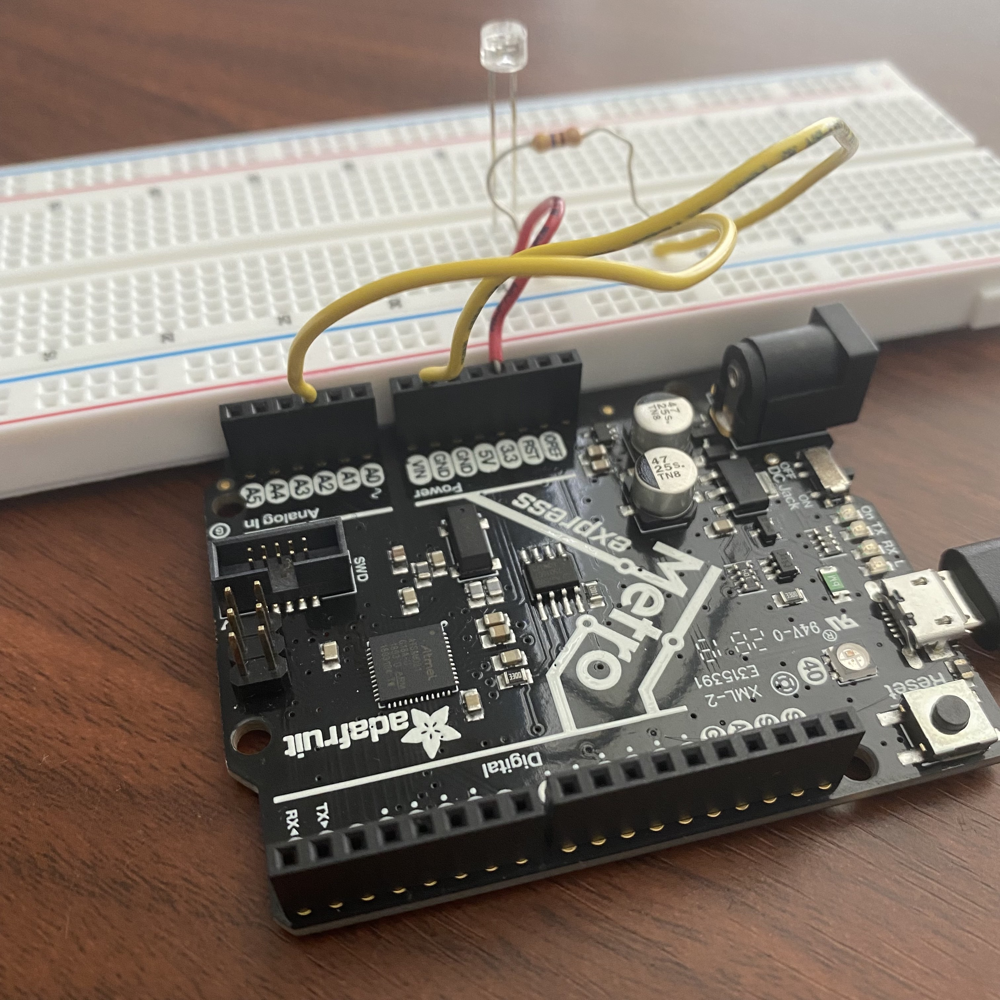
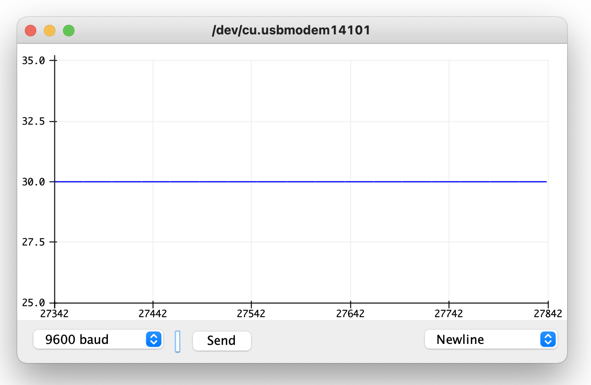
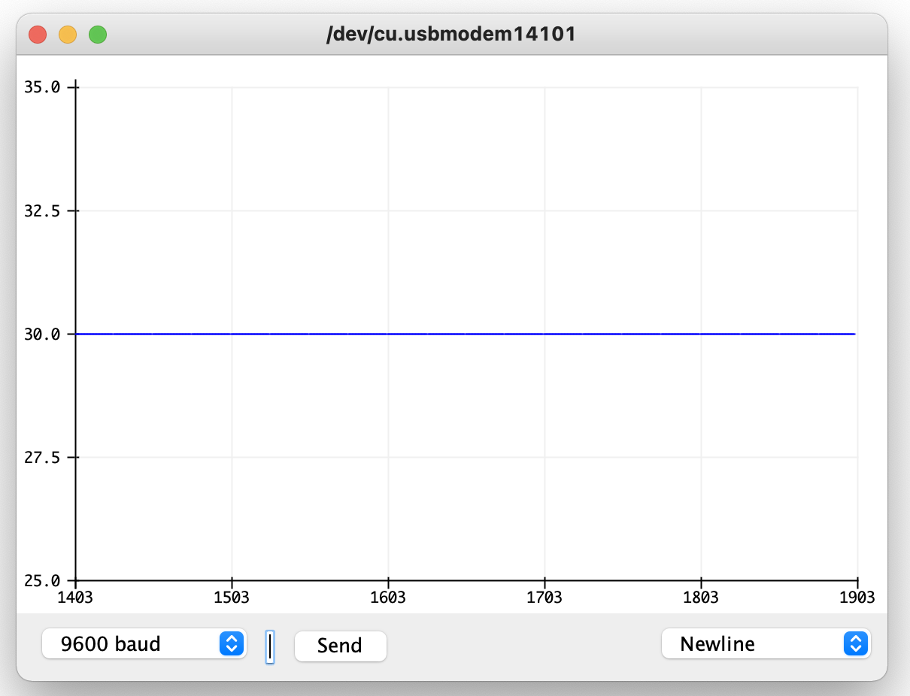
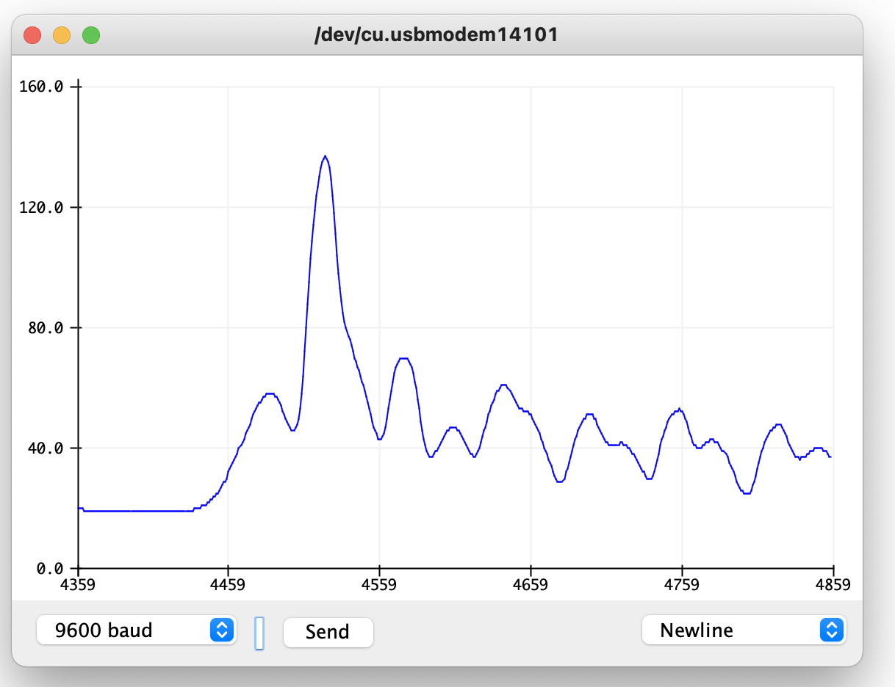

Programmable Electronics
Use a sensor from the kit to measure a physical quantity with your microcontroller. Calibrate your sensor (describe the range between its min and max values, and whether you can control this range). Show data in the form of a table or graph.
Then do the same as (1) with a sensor you have fabricated yourself using copper tape, aluminum foil, Velostat, etc.
For the first part of the assignment I chose to use the phototransistor sensor.
I built a circuit with wires, a breadboard, a Metro M0 Express microcontroller, a 1k ohm resistor and a phototransistor sensor.
 
After building the circuit I wrote firmware to display the averaged phototransistor sensor readings on the serial monitor.
Based on the serial monitor it seemed like the minimum input from the phototransistor sensor resting idle in my room was about 30.
#define n 10
void setup()
{
Serial.begin(9600);
while (!Serial);
}
void loop()
{
int sum = 0;
for (byte i = 0; i < n; i++)
sum += analogRead(A2);
sum /= n;
Serial.println(sum);
delay(5);
}

When I was working on my final project prototype I had a lot of trouble working with the accelerometer input.
The input would have a lot of noise, and I tried hiding the input jitter on the game demo with interpolation.
Like with the accelerometer, the phototransistor input also still seemed noisey so I tried to find a way to deal with it.
I don't know if this is the best way to do this but I tried making it so that the firmware added the average to a circular buffer and then got the average of the entire buffer.
I did this because averaging the sensor input x times per loop call still left noise on the plotter, so I thought that shifting the average as the sensor value changed with time would be better.
#define length 20
void setup()
{
Serial.begin(9600);
while (!Serial);
}
void loop()
{
static int buffer[length];
static int index = 0;
int sum = 0;
int input = 0;
byte i = 0;
for (i = 0; i < length; i++)
input += analogRead(A2);
input /= length;
buffer[index] = input;
index = (index + 1) % length;
for (byte i = 0; i < length; i++)
sum += buffer[i];
sum /= length;
Serial.println(sum);
delay(5);
}
The resulting serial monitor output looked cleaner than it did before. The line appeared smoother and like a movie prop.
You can see the smooth lines as the sensor sits idle and as I wave a flashlight back and forth over the phototransistor sensor.
 
Fabricated Sensor
For the second part of the assignment I created a simple fabricated aluminum foil capacitave sensor to detect touches.
I built the sensor using a strip of aluminum foil, paper, alligator clips and a Metro M0 Express microcontroller.

After building the sensor and the circuit I installed the capacitive sensor library so that I could read input from the sensor.
I wrote this firmware to display the average capacitive sensor readings on the serial monitor.
#include
CapacitiveSensor cs = CapacitiveSensor(2, 3);
void setup()
{
cs.set_CS_AutocaL_Millis(0xFFFFFFFF)
Serial.begin(9600);
while (!Serial);
}
void loop()
{
Serial.println(cs.capacitiveSensor(30));
delay(5);
}